Physical Diagnosis 2 · Cardiac OSCE, Wednesday 21 October · Class of 2028
20 conditions — 9 routine, 6 urgent, 5 emergent
Use the Download as PDF button, top right, to keep this offline — it prints landscape with every row intact.
Managed in clinic, on a normal timescale. The station is most likely to be one of these, so this is the block to know cold.
| Condition | How the patient describes it the words they actually use |
What you see, feel and hear inspection, palpation, auscultation, the vitals clue |
Physical exams to rule it in or out the maneuvers, not the findings |
Top 3 differentials and what separates each one |
Tests — and what a positive looks like | Treatment & referral | Patient education |
|---|---|---|---|---|---|---|---|
| Primary hypertensionTop 10 most common · #1The vast majority of adult hypertension is primary; 47.7% of adults have hypertension and only 20.7% are controlled.Clinical Medicine Lecture 20 Hypertension (Jaquith) · slides 4, 7, 10, 12, 20, 26, 31, 37–41, 45, 46, 48, 50, 51, 53, 55–57, 61, 65, 66, 72 · Physical Diagnosis 2 Cardiovascular slides 20, 23, 42, 102, 106 | “The machine at the pharmacy said 152 over 94, but I feel completely fine.” Sometimes: “I’ve been getting headaches — is it my pressure?” | Vitals form: ≥130/80 is hypertension — stage 1 is 130–139/80–89, stage 2 ≥140/≥90; use the higher category when the two numbers disagree. Usually a normal examination. With long-standing disease: a sustained, forceful but non-displaced apical impulse and an S4 (left ventricular hypertrophy), and arteriolar narrowing or arteriovenous nicking on fundoscopy. | Re-measure properly: seated after 5 minutes’ rest, back supported, feet flat, bare arm at heart level, correct cuff, at least two readings, and both arms at the first visit; standing pressure in older adults or anyone on medication. Palpate radial and femoral pulses together for delay (coarctation) and auscultate for a renal bruit. Fundoscopy; palpate the apical impulse and listen with the bell at the apex in left lateral decubitus for an S4. |
| Rules it INHome blood pressure monitoring → two readings a minute apart, morning and evening, for 7 days; a raised average confirms it. Baseline panel (comprehensive metabolic panel, estimated glomerular filtration rate, urine albumin-to-creatinine ratio, urinalysis, complete blood count, glucose or glycated hemoglobin, lipids, thyroid-stimulating hormone) → organ damage and secondary clues. 12-lead electrocardiogram → left ventricular hypertrophy voltage (specific, not sensitive).Rules the differentials OUTA normal home average with high office readings is white coat hypertension. A secondary clue triggers its test: aldosterone-to-renin ratio (resistance, low potassium), renal duplex ultrasound (abrupt onset, bruit, flash pulmonary edema), sleep study (snoring, apneas), plasma metanephrines (paroxysms of headache, sweating, palpitations). Any acute organ-injury symptom moves the patient to the emergency row. | Lifestyle for everyone: a Dietary Approaches to Stop Hypertension eating pattern, sodium under 2,300 mg a day, 150 minutes a week of aerobic exercise plus resistance training, weight loss, limited alcohol, no smoking. Goal below 130/80. Stage 1: one first-line drug if cardiovascular disease, diabetes, chronic kidney disease or a 10-year risk ≥7.5%; stage 2: two complementary first-line drugs, ideally in one pill — a thiazide-type diuretic (chlorthalidone preferred), an angiotensin-converting enzyme inhibitor or angiotensin receptor blocker (never both), or a dihydropyridine calcium channel blocker (amlodipine).ROUTINE — primary care clinic; confirm with a week of home readings, recheck about 4 weeks after starting drugs; hypertension specialist only if truly resistant. | Feeling well does not mean it is controlled — most people have no symptoms, and headache is not a gauge. Take the pills every day (missed doses are the commonest reason pressure stays high), keep a home log and don’t react to one high reading. Avoid anti-inflammatory painkillers and decongestants, which raise pressure. Emergency department for a sudden severe headache, confusion, vision change, weakness, chest or back pain, or breathlessness. |
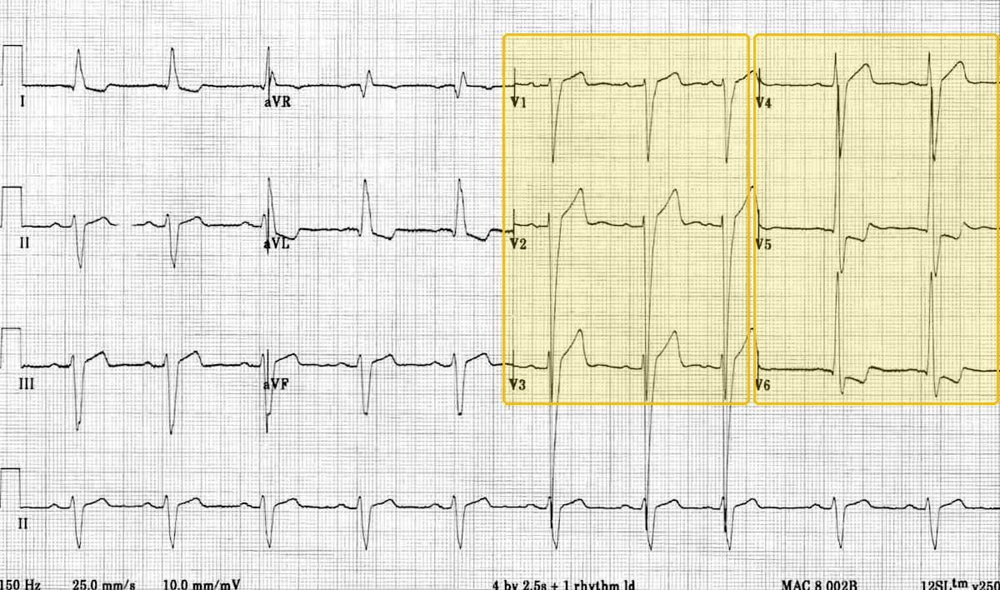 | |||||||
| Chronic venous insufficiency and varicose veinsTop 10 most common · #2Chronic venous disease runs from telangiectasias to varicose veins to chronic venous insufficiency; family history is the most common predisposing factor for varicose veins and prior deep vein thrombosis one of the most common causes of insufficiency.Clinical Medicine Lecture 26 Venous Disorders (Shah) · slides 5–15, 27–44 · Physical Diagnosis 2 Cardiovascular slides 85, 88, 90–95, 110–113 | “My legs feel heavy and achy by the end of a day on my feet, and my ankles swell — it’s better when I put them up.” Later: “The skin around my ankle has gone brown and itchy, and now there’s a sore that won’t heal.” | Pitting edema of the lower leg; brown hemosiderin staining and itchy stasis dermatitis starting at the medial malleolus; shiny, taut skin and, with time, firm bound-down lipodermatosclerosis. Dilated, tortuous varicosities seen and felt with the patient standing, sometimes tender. A venous ulcer sits above the ankle (medial or anterior) with a clean, fibrinous base. Temperature and pulses are normal; so are the vitals. | Inspect BOTH legs standing (dependent) for varicosities and compare sides. Press a thumb for at least 2 seconds over the dorsum of the foot, behind the medial malleolus and over the shin, then grade the pitting. Feel temperature with the back of the hand; palpate the dorsalis pedis and posterior tibial pulses and check capillary refill. Ankle-brachial index — done to rule OUT arterial disease before compression, not to make the diagnosis. |
| Rules it INVenous duplex ultrasound → valvular reflux (incompetence) with a patent deep system and no thrombus; for varicose veins it maps the reflux, usually in the great saphenous vein. Ankle-brachial index → normal, which clears the patient for compression. Catheter venography is the gold standard but is kept for planning an intervention.Rules the differentials OUTThrombus on the duplex scan redirects to deep vein thrombosis; a low ankle-brachial index or weak pulses means arterial disease (no compression). Bilateral edema without reflux points to heart, kidney, liver or drug causes (calcium channel blockers, nonsteroidal anti-inflammatory drugs); a punch biopsy can help when the cause of an ulcer is uncertain. | Nonoperative first: leg elevation above heart level, daily walking and ankle flexion, emollient skin care, and graduated compression stockings once arterial disease is excluded. Stasis dermatitis: barrier cream, then a mid-potency topical corticosteroid (triamcinolone); cellulitis: cephalexin or clindamycin; an ulcer needs compression plus wound-care referral. Varicose veins: weeks to months of stockings, then sclerotherapy, laser or radiofrequency ablation, or stripping. Vascular referral for a nonhealing or recurrent ulcer, arterial insufficiency, persistent dermatitis or significant saphenous reflux.ROUTINE — primary care clinic, vascular referral for a nonhealing or recurrent ulcer; sudden one-sided swelling is a deep vein thrombosis until proven otherwise. | Wear the stockings every day — the swelling, and the ulcers, come back when they are not worn. Put your feet up above the level of your heart, walk daily, avoid long spells of sitting or standing, moisturize and do not scratch. Come back for a new sore, a hot red painful leg, or sudden swelling of one calf. |
| Peripheral artery diseaseTop 10 most common · #450% of patients with peripheral artery disease also have coronary artery disease; smokers carry three times the risk, and calf claudication is the most common pattern.Clinical Medicine Lecture 27 Arterial Occlusive Disease and Aneurysms (Carter) · slides 9–53, 59–66 · Physical Diagnosis 2 Cardiovascular slides 85–86, 90–91, 96–106, 110–113 | “My calf cramps up after I walk a couple of blocks, and it goes away if I stand still for a few minutes — I can’t get as far as I used to.” Later: “Now my toes ache at night unless I hang my foot over the side of the bed.” | Diminished or absent pulses below the narrowing, a cool limb (the temperature line roughly marks the level), slow capillary refill, and bruits over the aorta, iliac, femoral or popliteal arteries. Thin, shiny, hairless skin, brittle nails, muscle atrophy, no edema; pallor on elevation and dependent rubor. Dry, punched-out, painful ulcers at the toe tips or metatarsal heads mean critical ischemia. Vitals: blood pressure in both arms; xanthelasma or a sternotomy scar is a clue. | Patient supine, warm and rested. Palpate every pulse on both sides — femoral, popliteal, posterior tibial, dorsalis pedis — and grade 0 to 4+; use a handheld Doppler if one cannot be felt. Listen for bruits; feel temperature with the back of the hand. Buerger test: raise the leg to 45 degrees for 1 minute (pallor), then dangle it (dependent rubor). Ankle-brachial index: the higher ankle pressure (dorsalis pedis or posterior tibial) over the higher arm systolic pressure, after 10 minutes supine. |
| Rules it INAnkle-brachial index → under 0.90 suggests peripheral artery disease (both decks); 0.4 to 0.9 is claudication and 0 to 0.4 rest pain or tissue loss (Clinical Medicine); under 0.50 is severe (Physical Diagnosis 2). Duplex ultrasound → the site and degree of stenosis, the mainstay first image. Computed tomography angiography, magnetic resonance angiography or conventional angiography (the gold standard) when an intervention is planned. Baseline electrocardiogram, lipid profile, hemoglobin A1c and renal function.Rules the differentials OUTA normal ankle-brachial index with full pulses argues against it — but a value above 1.3 (Clinical Medicine) or 1.40 (Physical Diagnosis 2) is not normal: calcified, noncompressible arteries, as in diabetes. Pain eased by sitting and leaning forward points to spinal stenosis; burning unaffected by walking to neuropathy; swelling with normal pulses to venous disease. | Risk-factor reduction: stop smoking; control blood pressure, diabetes and weight; and a supervised exercise program (30 to 45 minutes, three times a week). Antiplatelet therapy (aspirin or clopidogrel) and cilostazol; a statin. Revascularization (angioplasty with or without a stent, atherectomy, bypass, endarterectomy) when claudication stays disabling despite exercise and drugs. Rest pain, a nonhealing ulcer or gangrene → vascular surgery.ROUTINE — clinic work-up and vascular referral; URGENT vascular surgery for rest pain, a nonhealing ulcer or gangrene (critical limb ischemia); EMERGENT for a sudden cold, pale, pulseless limb (acute limb ischemia) or wet gangrene. | Smoking triples the risk — stopping is the first treatment. Walk until the pain comes, rest until it goes, and walk again, every day. Check your feet daily, wear well-fitting shoes and show us any sore. Go to the emergency department for a suddenly cold, pale, numb or painful leg; come back soon for pain at rest or at night, or a toe wound that will not heal. |
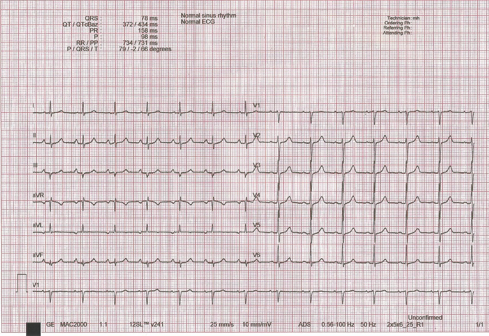 | |||||||
| Chronic heart failureTop 10 most common · #66.7 million Americans have heart failure, lifetime risk is 1 in 4, and it causes 45% of cardiovascular deaths; left-sided failure is the most common by far, 70–80%.Clinical Medicine Lecture 25 Heart Failure (Carter) · slides 5, 6, 8–10, 18, 24, 26, 29, 30, 32–34, 38–40, 52–54, 56 · Clinical Medicine Lecture 20 Hypertension slides 20, 57 · Clinical Medicine Lecture 26 Venous Disorders (Shah) slides 14, 26–29 · Physical Diagnosis 2 Cardiovascular slides 7, 8, 20, 23, 40, 42, 88, 89 | “I get winded walking to the mailbox, I sleep on three pillows, and my shoes are tight by evening.” Sometimes: “I wake up at night gasping and have to sit up.” | Vitals: normal or low pressure with a reduced ejection fraction, hypertension with a preserved one; a narrow pulse pressure and cool extremities warn of low output. Raised jugular venous pressure, bilateral pitting edema and hepatomegaly. A displaced, diffuse apical impulse with an S3 (dilated ventricle), or a sustained impulse with an S4 (stiff, hypertrophied ventricle). Crackles are rare when compensated — finding them suggests decompensation. | Head of the bed at 30–45 degrees to measure the jugular venous pressure, then hepatojugular reflux (firm pressure over the liver → a sustained rise in the neck veins). Turn to left lateral decubitus, bell at the apex for an S3 or S4; locate and size the apical impulse. Auscultate the posterior lung bases; press a thumb for 2 seconds over the dorsum of the foot, behind the medial malleolus and on the shin to grade pitting edema and how high it climbs; palpate the liver edge. |
| Rules it INB-type natriuretic peptide → elevated; above 400 makes heart failure likely (below 100 rules out acute failure). Echocardiogram → the ejection fraction group: ≤40% reduced, 41–49% mildly reduced, ≥50% preserved. Chest radiograph → cephalization, Kerley B lines, pleural effusion, a raised cardiothoracic ratio. Electrocardiogram → ischemic changes or left ventricular hypertrophy (tall R in V5–V6, deep S in V1–V2); metabolic panel for potassium and renal function.Rules the differentials OUTA B-type natriuretic peptide below 100 rules out acute failure and makes heart failure an unlikely cause of the breathlessness — look to the lungs (spirometry for chronic obstructive pulmonary disease). Edema with a normal natriuretic peptide and echocardiogram points to the veins (venous duplex ultrasound → reflux) or to a drug. A complete blood count looks for anemia, a high-output cause. | Guideline-directed medical therapy by ejection fraction (2022). Reduced (≤40%): an angiotensin receptor-neprilysin inhibitor (sacubitril-valsartan) or an angiotensin-converting enzyme inhibitor or angiotensin receptor blocker, a beta blocker, a mineralocorticoid receptor antagonist (spironolactone), a sodium-glucose cotransporter 2 inhibitor (dapagliflozin) and a loop diuretic (furosemide) as needed; hydralazine with isosorbide dinitrate for African American patients in New York Heart Association class III–IV; avoid calcium channel blockers, above all verapamil and diltiazem. Mildly reduced or preserved: diuretics as needed and a sodium-glucose cotransporter 2 inhibitor first. Implantable cardioverter-defibrillator if ejection fraction ≤35%, class II–III on optimal therapy, life expectancy ≥1 year; cardiac rehabilitation; follow potassium and renal function; co-manage with cardiology.ROUTINE — clinic with cardiology co-management to titrate therapy; same-day review if weight or breathlessness is climbing; emergency department now for breathlessness at rest, chest pain or fainting. | Weigh every morning and know your dry weight — an overnight gain is fluid, not fat; call for more than 2–3 pounds in a day or 5 in a week. Take every medicine even when you feel well: the goals are longer survival and slower progression, not just comfort. Limit salt, avoid anti-inflammatory painkillers (they hold salt and water), stop smoking, limit alcohol. Decompensation red flags: more pillows, waking up gasping, swelling climbing the legs, less urine or new confusion — call the same day; breathless at rest, chest pain or fainting — call 911. |
| Premature ventricular contractionsTop 10 most common · #7Elwaya’s top point of the lecture: the main causes are hypoxemia and electrolyte imbalance, so check oxygen saturation and electrolytes. They occur with or without structural heart disease and most patients are asymptomatic; they are the commonest ventricular ectopic beat.Clinical Medicine Lecture 30 Arrhythmias II: Blocks and Ventriculars (Elwaya) · slides 33, 35, 36, 40 · Clinical Medicine Lecture 29 slides 46, 54, 56 · Physical Diagnosis 2 Cardiovascular slides 6, 30, 99 | “My heart skips a beat and then gives a big thump — I feel it in my neck. It’s worse when I’ve had a lot of coffee.” | Usually normal vitals, with a regular pulse broken by an early beat and a pause; the early beat may not reach the wrist. Look for a cause or for structural disease: a low oxygen saturation, a displaced impulse, a murmur, an S3, crackles, edema. | Palpate the radial pulse while auscultating the apex for a full minute to catch early beats and any that fail to reach the wrist. Read the pulse oximetry, since hypoxemia is a main cause. Jugular venous pressure at 30–45 degrees, palpate for a displaced impulse, and listen for murmurs or an S3 — structural heart disease makes the patient high-risk. |
| Rules it INElectrocardiogram or monitor → an early, wide (over 0.12 seconds), bizarre QRS with no P wave; every other beat is bigeminy, every third trigeminy. Ambulatory monitor → the burden: over 15% of beats (15,000 a day) is high, under 1% (1,000 a day) is low. Potassium, magnesium, calcium and oxygen saturation → the reversible causes.Rules the differentials OUTA narrow early beat with its own P wave means premature atrial contractions; three or more consecutive wide beats mean ventricular tachycardia; no P waves anywhere means atrial fibrillation. An echocardiogram showing a structurally normal heart keeps the patient low-risk. | Correct hypoxemia and electrolytes; cut alcohol, caffeine and stimulants. Low-risk, low burden, no symptoms → reassurance. Low-risk with symptoms → a beta blocker first, catheter ablation if refractory or not tolerated. High-risk (burden over 15%, induced cardiomyopathy, structural or conduction disease, past syncope) → beta blocker and optimized treatment of the heart disease, or ablation for an isolated induced cardiomyopathy with heart failure; refer to cardiology.ROUTINE — clinic electrocardiogram, labs and ambulatory monitor; cardiology referral if high-risk (fainting, a sustained racing heartbeat or chest pain is not routine) | Usually benign; trim caffeine, alcohol and stimulants. If a beta blocker is started, take it daily and do not stop it suddenly. Come back, or call 911, for fainting, a racing heartbeat that does not stop, chest pain or breathlessness. |
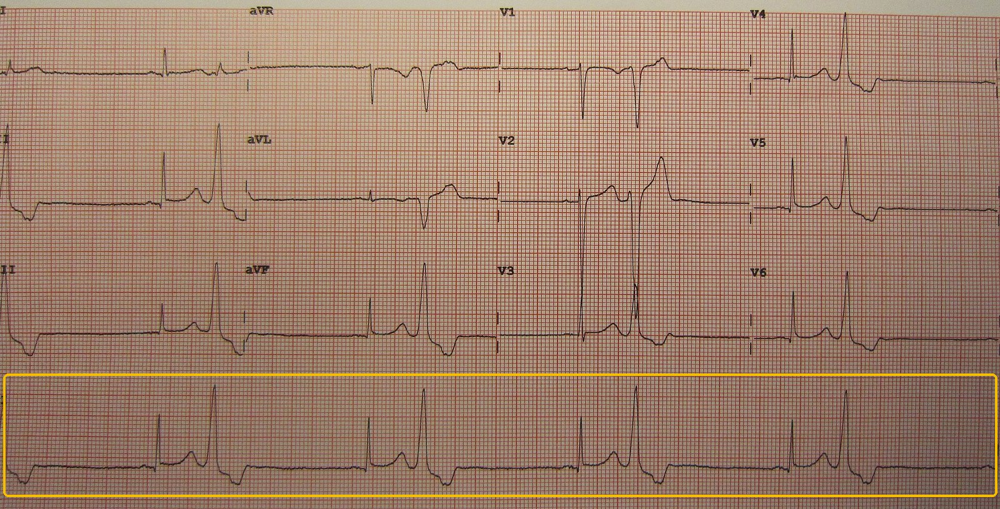 | |||||||
| Vasovagal syncopeTop 10 most common · #8The most common type of syncope, “the common faint”, most often in young women.Clinical Medicine Lecture 21 Hypotension (Carter) · slides 9, 13–17, 23, 27, 37, 40 · Physical Diagnosis 2 Cardiovascular slides 9, 60–62, 70 | “I was getting my blood drawn and suddenly felt hot, sick to my stomach and sweaty, then everything went gray. My friend said I was out for a few seconds, and I felt fine right after.” | Usually normal vitals and a normal examination afterward, with normal standing readings. If seen during the episode: pale, clammy and diaphoretic, with bradycardia and a falling pressure (the reflex). No tongue bite, no focal deficit, no murmur. | Orthostatic vital signs (supine, then standing within 3 minutes) to exclude orthostatic hypotension. Auscultate for an outflow murmur and repeat with Valsalva and squat-to-stand — a hypertrophic cardiomyopathy murmur gets louder, the cardiogenic faint you must not miss in a young patient. Inspect the tongue and do a focused neurologic examination. |
| Rules it INThe history → a trigger, a warm, nauseated, sweaty prodrome and rapid full recovery (“history, history, history”; a symptom log shows the pattern). Electrocardiogram → normal, lowering suspicion of an arrhythmia. Fingerstick glucose → normal, excluding hypoglycemia. Tilt-table test, only if recurrent and unclear → reproduces the prodrome with a fall in pressure and heart rate.Rules the differentials OUTPositive orthostatic vital signs redirect to orthostatic hypotension. A faint without warning, during exertion or with palpitations, an abnormal electrocardiogram or a murmur sends you to cardiogenic syncope (monitor, echocardiogram, cardiology). Tongue biting, tonic-clonic activity or postictal confusion point to seizure. | Trigger avoidance, and safety precautions when a trigger cannot be avoided (lie down for blood draws and injections). Education is the treatment: “understanding is the key to compliance.” Fluids and physical counter-pressure maneuvers (crossing the legs, tensing the arms) at the first warning. Refer to cardiology only if the history leaves the source unclear.ROUTINE — clinic; no emergency workup once the history is classic and the electrocardiogram is normal; cardiology referral if unclear. | “If you feel faint, sit or lie down wherever you are” — at the first warmth or nausea. Keep a log of each episode (setting, trigger, warning) and bring it back. Tell staff before blood draws so you can lie down. Return at once for a faint with no warning, during exercise, with chest pain or a racing heart, or with an injury. |
| Mitral regurgitationTop 5 non-emergent · #2Mild-to-moderate isolated mitral regurgitation is usually asymptomatic, so it presents as a murmur to work up in clinic; the axilla is what separates it from tricuspid regurgitation (professor emphasized).Clinical Medicine Lecture 23 Valvular Heart Disease · slides 9, 17, 44–52, 54, 71 · Physical Diagnosis 2 Cardiovascular slides 23, 30, 39–40, 63, 73–74 | “I get winded more easily than I used to, and sometimes I feel my heart pounding.” Often nothing at all — the murmur is found at a routine physical. | Holosystolic murmur at the apex radiating to the left axilla (blowing on the Clinical Medicine slide, harsh on the Physical Diagnosis 2 slide), with or without an S3 and an apical thrill. Apical impulse diffuse and displaced to the left and down from volume overload. An irregularly irregular pulse if atrial fibrillation has developed; decompensated: rales, raised jugular venous pressure, leg edema. | Roll the patient into left lateral decubitus and listen at the apex with the diaphragm, then follow the murmur into the axilla. Handgrip or squatting → LOUDER; standing or Valsalva → softer. No inspiratory increase — that is the Carvallo sign of tricuspid regurgitation. Bell at the apex for an S3; jugular venous pressure at 30–45 degrees, lung bases and ankles. |
| Rules it INTransthoracic echocardiogram → the regurgitant flow into the left atrium, left atrial enlargement and left ventricular hypertrophy; severe = regurgitant fraction 50% or more. Electrocardiogram → left atrial enlargement and left ventricular hypertrophy in severe disease (low sensitivity), or atrial fibrillation. Left heart catheterization is not required.Rules the differentials OUTA jet into the right atrium with a competent mitral valve → tricuspid regurgitation. Leaflets over 5 mm thick flaring into the left atrium → prolapse as the cause. A calcified aortic valve with a high gradient → aortic stenosis. | Medical therapy increases forward output while reducing the regurgitant volume, and treats the comorbidities — atrial fibrillation and pulmonary hypertension. Echocardiogram surveillance with cardiology. Severe regurgitation with symptomatic left ventricular dysfunction, ejection fraction under 60% or end-systolic dimension over 40 mm → mitral valve clip, transcatheter mitral valve replacement, or a mechanical (lifelong anticoagulation) versus biological valve.ROUTINE — clinic echocardiogram and cardiology referral; sudden regurgitation after an infarction (papillary muscle rupture) with pulmonary edema is EMERGENT. | The valve between the two left heart chambers leaks, so some blood flows backward with each beat; mild leaks are simply watched with periodic echocardiograms. Come back for breathlessness on exertion, needing more pillows, waking up short of breath, leg swelling, or a racing irregular heartbeat. If a blood thinner is prescribed for atrial fibrillation or a mechanical valve, never skip it. |
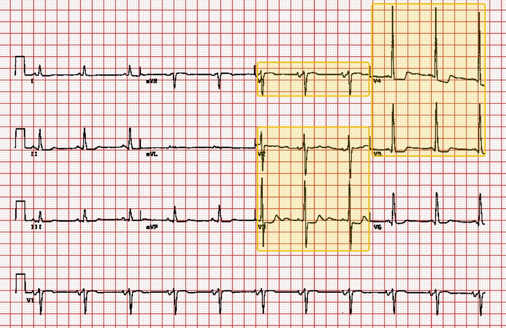 | |||||||
| Mitral valve prolapseTop 5 non-emergent · #3Usually benign and asymptomatic, in healthy women 15–30, but it is the classic systolic click and a chronic cause of mitral regurgitation.Clinical Medicine Lecture 23 Valvular Heart Disease · slides 45, 48, 54 · Physical Diagnosis 2 Cardiovascular slides 6, 38–39, 60–64, 70; Physical Diagnosis 2 special maneuvers handout | “Every now and then I feel my heart skip or flutter, but otherwise I feel fine.” Often no complaint — the click is found at a school or sports physical. | A young, healthy woman with normal vitals. Mid-systolic click, high pitched, at or just medial to the apex and the lower left sternal border, often followed by a late systolic murmur crescendoing up to S2 — the mitral regurgitation it causes. | Diaphragm at the apex and lower left sternal border for the click, then make it move: standing quickly or Valsalva → click EARLIER, murmur longer and louder; squatting or passive leg raise → click LATER, murmur shorter (handout). A click that moves with filling is prolapse. |
| Rules it INEchocardiogram → thickened, redundant mitral leaflets (over 5 mm) flaring into the left atrium in systole; Doppler shows whether there is mitral regurgitation. Electrocardiogram for the palpitations → usually normal.Rules the differentials OUTNormal leaflet thickness and motion on echocardiogram excludes it. Asymmetric septal hypertrophy with systolic anterior motion → hypertrophic cardiomyopathy; a holosystolic jet through a non-prolapsing valve → another cause of mitral regurgitation; a bicuspid aortic valve → the ejection sound. | Usually no treatment — reassurance and observation. If it progresses to mitral regurgitation: mitral valve clip, transcatheter mitral valve replacement, or biological or mechanical replacement, with cardiology referral at that point.ROUTINE — outpatient echocardiogram to confirm; cardiology only if mitral regurgitation develops. | This is a usually harmless shape of the valve that most people live with and need nothing for but an occasional check. Come back if you notice breathlessness on exertion, leg swelling, fainting, or palpitations that last or come with dizziness. |
| Orthostatic hypotensionTop 5 non-emergent · #4Orthostatic syncope is one of the three most common causes of syncope; standing pressure is checked routinely in older adults and anyone on antihypertensives or diabetes drugs.Clinical Medicine Lecture 21 Hypotension (Carter) · slides 9, 11–13, 16, 18, 23, 25, 28–36 · Clinical Medicine Lecture 20 Hypertension (Jaquith) slides 39, 59 · Physical Diagnosis 2 Cardiovascular slides 9, 85 | “When I get out of bed or stand up fast, I get lightheaded and my vision goes dim — this morning I actually passed out.” Often: “I’ve had diarrhea for days” or “they just raised my water pill.” | Vitals form: the supine-to-standing set is the finding — systolic falls more than 20 or diastolic more than 10 within 3 minutes. The heart rate decides the type: a brisk rise (68 → 92) is non-neurogenic, with dry mucous membranes; a minimal rise (72 → 76) is neurogenic, with moist membranes and often reduced vibration and light touch in the feet. The cardiac examination is normal. | Orthostatic vital signs: pressure and heart rate supine, then standing, read within 3 minutes. Mucous membranes and capillary refill for volume; a cardiac examination for rhythm and murmurs; a neurologic examination with vibration and light touch in the feet for diabetic or autonomic neuropathy. |
| Rules it INOrthostatic vital signs → systolic fall over 20 or diastolic over 10 within 3 minutes of standing (systolic over 30 with a high baseline or supine hypertension); one criterion is enough. Heart rate response → a significant rise means non-neurogenic (volume, drugs), a minimal rise means neurogenic (autonomic failure). Complete blood count and metabolic panel → blood loss, dehydration or an electrolyte cause; electrocardiogram → normal sinus rhythm lowers cardiac suspicion.Rules the differentials OUTNormal orthostatic vital signs exclude it — go back to the history for a reflex trigger. A heart rate rise without a pressure fall is postural orthostatic tachycardia syndrome (tilt-table test). An abrupt faint without prodrome, or an abnormal electrocardiogram, sends you to cardiogenic syncope: monitor, echocardiogram, cardiology. | Slow position changes and treat the real diagnosis: replace volume after diarrhea or bleeding; reduce or stop the offending drug (diuretic, alpha-1 blocker such as tamsulosin or doxazosin, other antihypertensives). Compression stockings help venous pooling. Neurogenic: midodrine is best, avoided with supine hypertension, severe heart disease or chronic kidney disease; refer to the right specialty (neurology for autonomic failure) when the source is unclear.ROUTINE — clinic; adjust medicines, rehydrate and recheck orthostatic vital signs at follow-up; emergency department instead if the cause is bleeding. | Change position in stages: sit on the edge of the bed, then stand, and sit straight back down at the first lightheadedness. Keep up fluids when sick with diarrhea or vomiting, and call before changing your own medicines — understanding why the pressure falls is what makes the advice work. Come back at once for black or bloody stools, fainting while sitting or lying, chest pain or a racing heart. |
Still outside the emergency department, but measured in days, not weeks, or treated the same day. The commonest way to get one of these wrong is to manage it correctly and too slowly.
| Condition | How the patient describes it the words they actually use |
What you see, feel and hear inspection, palpation, auscultation, the vitals clue |
Physical exams to rule it in or out the maneuvers, not the findings |
Top 3 differentials and what separates each one |
Tests — and what a positive looks like | Treatment & referral | Patient education |
|---|---|---|---|---|---|---|---|
| Stable anginaTop 10 most common · #3The most common form of angina pectoris, and chest pain is the most common symptom of coronary artery disease.Clinical Medicine Lecture 24 Coronary Artery Disease · slides 22–23, 27–32, 35, 37–41, 45–46, 72a, 79 · Clinical Medicine Lecture 23 Valvular Heart Disease slides 16–17 · Physical Diagnosis 2 Cardiovascular slides 5, 42, 67, 96–97 | “When I walk up the stairs or hurry to the car I get a pressure in the middle of my chest, like something heavy sitting on it. It goes away after a few minutes when I stop and rest.” | Often a normal examination between attacks — say so. Watch how the patient points: a clenched fist over the sternum (Levine sign) is the real thing. Vitals: hypertension and obesity as risk factors; heart rate and saturation normal at rest. During pain an S4 may be heard; diminished peripheral pulses suggest atherosclerosis elsewhere. | Ask the patient to point to the pain, then press on the chest wall to see whether pressure reproduces it. Listen at the right second intercostal space and up into the carotids for the murmur of aortic stenosis, which also causes exertional angina. Auscultate each carotid with the breath held, then palpate one at a time; palpate the peripheral pulses. |
| Rules it INElectrocardiogram (every chest pain, with a chest X-ray) → often normal at rest. Exercise treadmill or nuclear stress test → stress-induced electrocardiogram changes, T-wave inversion or ST depression, or a reversible perfusion defect on the nuclear images. Coronary angiography → the fixed stenosis; the gold standard.Rules the differentials OUTTroponin, repeated → normal excludes infarction (a rule-out tool). Pain at rest or escalating means unstable angina, not stable. A normal stress test with post-meal burning relieved by antacids → reflux; pain reproduced by chest-wall pressure → costochondritis. A calcium score stratifies risk only. | Sublingual nitroglycerin for attacks — the cornerstone. Beta blocker (a calcium channel blocker if a beta blocker is contraindicated), statin and aspirin. Risk-factor control: blood pressure, lipids, glucose, weight, alcohol, exercise, smoking cessation, stress. Refer to cardiology for stress testing and, if positive, catheterization.URGENT — a stable, predictable pattern (same effort brings it on, rest relieves it, no recent change): stress test and cardiology within days to weeks. New-onset angina that limits activity, pain at rest or a worsening pattern is unstable angina → EMERGENT, emergency department now. | The pain is the heart muscle running short of oxygen during effort. At an attack, stop, sit down and take one nitroglycerin under the tongue; if the pain is not better or is worse 5 minutes later, call 911. Pain at rest, or attacks that come more often or with less effort, means coming in now. No nitroglycerin within 24 hours of a phosphodiesterase inhibitor such as sildenafil. Quit smoking, exercise, and take the aspirin, statin and beta blocker every day. |
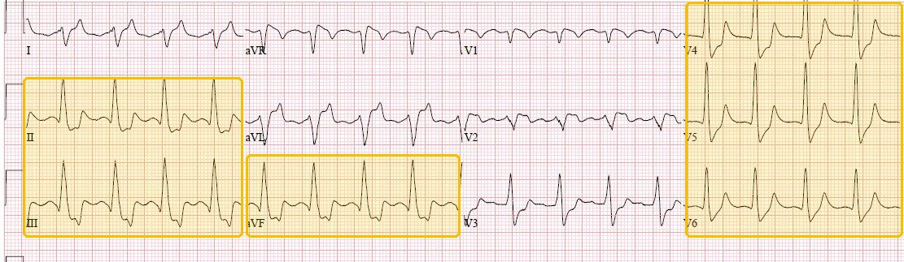 | |||||||
| Atrial fibrillationTop 10 most common · #5Commonly seen in older patients with hypertension, diabetes, heart disease, obesity, sleep apnea or heavy alcohol use, and the most common sustained arrhythmia; its danger is stroke from atrial clot, which anticoagulation prevents.Clinical Medicine Lecture 29 Arrhythmias I: Supraventricular (Elwaya) · slides 24, 28, 32, 42, 46–50, 56, 58 · Physical Diagnosis 2 Cardiovascular slides 6, 30, 99 | “Since last night my heart has been racing and fluttering — all irregular, not a steady beat — and I get winded and a bit dizzy.” | An irregularly irregular pulse, usually fast (a ventricular rate of 110 to 160 is typical), so the vitals form shows tachycardia. The apical rate often exceeds the radial rate (a pulse deficit) and S1 varies in loudness. Hypotension, crackles or a raised jugular venous pressure mean it has tipped into heart failure — an emergency. | Count the apical rate by stethoscope and the radial pulse together for a full 60 seconds; a short count misleads in an irregular rhythm. Jugular venous pressure at 30–45 degrees, lung bases and ankles for heart failure. Palpate the thyroid, and screen for a stroke (face, arm drift, speech). |
| Rules it IN12-lead electrocardiogram → irregularly irregular, no P waves and no PR interval, narrow QRS. CHA2DS2-VASc score → stroke risk (0 in a man or 1 in a woman is low risk and may not need anticoagulation). HAS-BLED score → bleeding risk on anticoagulation. Thyroid-stimulating hormone, electrolytes and an echocardiogram look for the cause.Rules the differentials OUTOrganized atrial activity before every QRS excludes it: sawtooth waves send you to flutter, three or more P-wave shapes to multifocal atrial tachycardia, isolated early P waves on a regular rhythm to premature atrial contractions. A low thyroid-stimulating hormone makes hyperthyroidism the driver to treat. | Unstable → synchronized cardioversion. Stable with rapid ventricular response → intravenous rate control; stable without it → oral rate control (a beta blocker or a nondihydropyridine calcium channel blocker) — rate, not rhythm, is goal one. Anticoagulate by stroke risk: direct oral anticoagulants preferred if nonvalvular (dabigatran, apixaban, edoxaban, rivaroxaban), or warfarin to an international normalized ratio of 2 to 3; the slide says a HAS-BLED of 3 or more means no anticoagulation (guidelines treat it as bleeding risk to fix, not a bar). Outpatient cardioversion only after 21 days of anticoagulation; ablation; cardiology referral.URGENT — same day: rate control and the anticoagulation decision if stable without rapid ventricular response; rapid ventricular response needs intravenous rate control in the emergency department; EMERGENT (call 911, synchronized cardioversion) if unstable — hypotension, pulmonary edema or an acute myocardial infarction | Take the anticoagulant every day without gaps — it prevents the stroke; report black stools, blood in the urine or easy bruising. Call 911 for face drooping, arm weakness or slurred speech, chest pain, fainting or severe breathlessness. Cut alcohol, lose weight, treat sleep apnea, and keep blood pressure and diabetes controlled. |
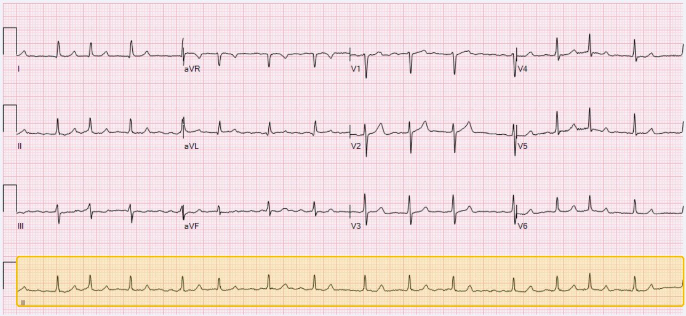 | |||||||
| Deep vein thrombosisTop 10 most common · #9Lower-extremity clots are 10 times more common than upper, and pulmonary embolism is the complication not to miss: untreated, fatal embolism rises from under 1% with a clot alone to about 9% with a massive embolism.Clinical Medicine Lecture 26 Venous Disorders (Shah) · slides 46–72 · Physical Diagnosis 2 Cardiovascular slides 87–88, 114 | “My left calf has been swollen and sore since the long flight home — like a charley horse that keeps getting worse.” After a hip or knee replacement: “my whole leg has swelled up.” | One-sided calf or whole-leg swelling (swelling is 97% sensitive), warmth, erythema and tenderness along the deep veins; pitting edema confined to that leg; collateral (nonvaricose) superficial veins. Homans sign may be positive but is neither sensitive nor specific. Vitals are usually normal — tachycardia, a fast respiratory rate or a low oxygen saturation raises pulmonary embolism. | Compare both legs and measure calf circumference 10 centimeters below the tibial tuberosity — more than 3 centimeters larger than the other side is a Wells point. Palpate along the deep venous system; check for pitting confined to the leg. Homans sign (knee bent, quick dorsiflexion; pain behind the knee) as a technique only — a negative does not reassure. Listen to the lungs and score the Wells criteria out loud. |
| Rules it INWells score → 3 or more is high (skip the D-dimer, go straight to ultrasound); 0 or less is low. D-dimer → sensitive, not specific: positive sends you to ultrasound. Venous duplex ultrasound → thrombus in a noncompressible deep vein; a diagnostic scan ends the work-up and treatment starts. Contrast venography is the invasive gold standard, now replaced by duplex.Rules the differentials OUTLow Wells plus a negative D-dimer excludes it. High risk with a negative thigh scan: scan the lower leg, use phlebography, or repeat the thigh scan in 1 week; a nondiagnostic scan goes to magnetic resonance imaging or phlebography. A clot confined to a superficial vein is thrombophlebitis; fever with erythema and a clear scan is cellulitis. | Anticoagulation is the mainstay: rivaroxaban or apixaban alone, or low molecular weight heparin or fondaparinux followed by dabigatran or edoxaban, or overlapped with warfarin. At least 3 months for a first clot (3 if provoked by a major transient factor, 3 to 6 if minor, indefinite if unprovoked). Outpatient if stable, low bleeding risk, normal kidneys and reliable; admit an iliofemoral clot, symptomatic pulmonary embolism, high bleeding risk or creatinine clearance under 30 milliliters per minute (unfractionated heparin). Inferior vena cava filter only when anticoagulation is contraindicated; thrombolysis or thrombectomy for selected large proximal clots.URGENT — same-day duplex ultrasound and anticoagulation; EMERGENT (emergency department, call 911) if breathlessness, pleuritic chest pain, coughing blood or fainting suggest pulmonary embolism. | Take the blood thinner every day for the whole course — at least three months; do not stop early. Watch for bleeding: black stools, blood in the urine, a severe headache. Call 911 for sudden shortness of breath, chest pain, coughing blood or fainting. On long trips get up and walk, and talk to us about estrogen pills, which raise clot risk. |
| Aortic stenosisTop 10 most common · #10The most common valvular disease, present in 25% of patients over 65 and 35% over 70; once symptomatic, 3-year mortality is 75% (angina 5 years, syncope 3, heart failure 2).Clinical Medicine Lecture 23 Valvular Heart Disease · slides 11–13, 16–22, 48 · Clinical Medicine Lecture 28 Cardiomyopathy slides 64–72 · Physical Diagnosis 2 Cardiovascular slides 23, 42, 50, 59–64, 67, 70; Physical Diagnosis 2 special maneuvers handout | “I get tight in the chest and out of breath when I walk any distance now, and last week I nearly passed out climbing the stairs.” | Harsh, midsystolic, crescendo-decrescendo murmur at the right second intercostal space radiating to both carotids; a thrill means grade 4/6 or more. A forceful, sustained apical impulse with a delayed, weak carotid pulse felt together = severe stenosis. S4 from the stiff hypertrophied ventricle; crackles once it fails. | Sit the patient up and leaning forward — heard better. Palpate the carotid while listening to time it, and feel apex and carotid together. Squatting from standing or passive leg raise → LOUDER; Valsalva or standing quickly → SOFTER or unchanged — the opposite of hypertrophic cardiomyopathy; handgrip softens it. Trace it into both carotids before calling them bruits. |
| Rules it INTransthoracic echocardiogram → thickened, calcified leaflets with reduced systolic opening and left ventricular hypertrophy; severe = valve area under 1.0 cm², mean gradient over 40 mmHg, jet velocity over 4.0 m/s (“4, 40 and 1”). Electrocardiogram → left ventricular hypertrophy in severe disease (low sensitivity). Left heart catheterization → the definitive finding.Rules the differentials OUTEchocardiogram with a normal aortic valve but asymmetric septal hypertrophy and systolic anterior motion of the mitral leaflet → hypertrophic cardiomyopathy. A regurgitant jet into the left atrium with a normal aortic valve → mitral regurgitation. A normal valve with ischemia on stress testing → coronary disease alone. | Medicines do not fix it (mild and moderate only); the patient is preload dependent: avoid dehydration, strenuous activity and competitive sports; with hypertension avoid beta blockers and calcium channel blockers; with angina avoid nitrates. Every patient with aortic stenosis on echocardiogram goes to cardiology. Severe stenosis with symptoms or left ventricular systolic dysfunction → transcatheter aortic valve replacement, or a mechanical (lifelong anticoagulation) versus biological valve; balloon valvuloplasty in children and young adults.URGENT — once symptomatic (exertional angina, syncope, dyspnea): echocardiogram and cardiology valve referral within days; an asymptomatic murmur gets a routine echocardiogram and cardiology consult. | The valve out of the heart has narrowed, so the heart works harder to push blood through; it is watched until symptoms appear, and then it is replaced. Report chest pain, fainting or breathlessness on exertion right away — they change the plan. Stay well hydrated, avoid heavy exertion and competitive sports, and do not take nitroglycerin unless cardiology prescribes it. Keep the echocardiogram and cardiology appointments. |
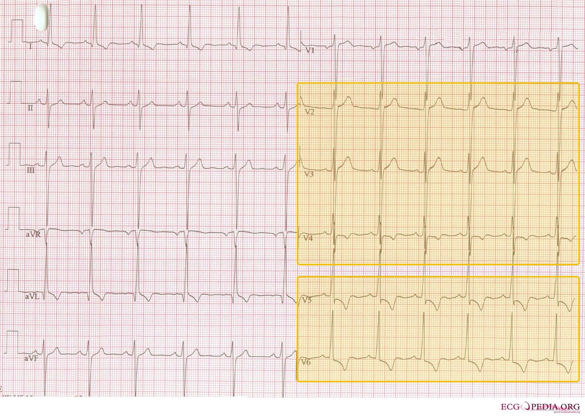 | |||||||
| Acute pericarditisTop 5 non-emergent · #1The most common disorder of the pericardium, about 5% of emergency department visits for nonischemic chest pain; it recurs in 15 to 30%.Clinical Medicine Lecture 31 Pericardial Disease (Reynolds) · slides 4, 5, 7, 8, 13–17, 19, 24, 26–28, 32, 33 · Physical Diagnosis 2 Cardiovascular slides 30, 59, 81 | “Sharp pain in the middle of my chest — it’s worse when I lie flat or take a deep breath, and better when I sit up and lean forward. I had a cold last week.” | Often sitting forward; may have fever and sinus tachycardia. The pericardial friction rub, highly specific: a high-pitched, scratchy or squeaking, often triphasic sound that waxes and wanes, loudest at the left sternal border (Erb’s point) with the diaphragm. Hypotension, distended neck veins or muffled heart sounds would mean tamponade. | Auscultate with the patient seated, leaning forward, breath fully exhaled and held, diaphragm pressed firmly at the left sternal border. The held breath separates the rubs: a pericardial rub persists, a pleural rub stops. Check jugular venous pressure at 30–45 degrees and measure pulsus paradoxus to exclude tamponade; press on the chest wall for reproducible tenderness. |
| Rules it INClinical: two of four — sharp substernal pleuritic chest pain, friction rub, widespread ST elevation, new or worsening effusion. Electrocardiogram → widespread concave ST elevation with PR depression, reciprocal ST depression and PR elevation in aVR. C-reactive protein and erythrocyte sedimentation rate → raised; echocardiogram → often normal unless there is an effusion. Troponin raised → myopericarditis.Rules the differentials OUTRegional ST elevation with reciprocal depression and a rising troponin send you to acute coronary syndrome; hypoxemia with a computed tomography pulmonary angiogram showing clot to pulmonary embolism; an infiltrate on the chest radiograph (normal in pericarditis) to pneumonia. Right ventricular diastolic collapse on echocardiogram means tamponade. | A nonsteroidal anti-inflammatory drug (aspirin, ibuprofen or indomethacin) plus colchicine, with gastrointestinal protection; prednisone only if those cannot be taken; after a myocardial infarction, aspirin plus colchicine and no other anti-inflammatory. Taper once symptom-free and the C-reactive protein (checked weekly) normalizes. Admit for any high-risk feature: fever above 38 degrees Celsius, subacute onset, signs of tamponade, moderate-to-large effusion, immunosuppression, oral anticoagulants, trauma, raised troponin, or no improvement after 7 days. Cardiology for no response, recurrence or constriction.URGENT — same-day diagnosis and outpatient anti-inflammatory treatment when there is no high-risk feature; any high-risk feature means admission, and signs of tamponade mean the emergency department now | Finish the full course even after the pain is gone — stopping early invites recurrence, which happens in about 15 to 30% of patients. No strenuous exercise for at least a month, keeping the heart rate under 100, until symptoms and the C-reactive protein settle; sleep with the head of the bed raised. Take the anti-inflammatory with food and the stomach protection. Breathlessness, lightheadedness or fainting means the emergency department. |
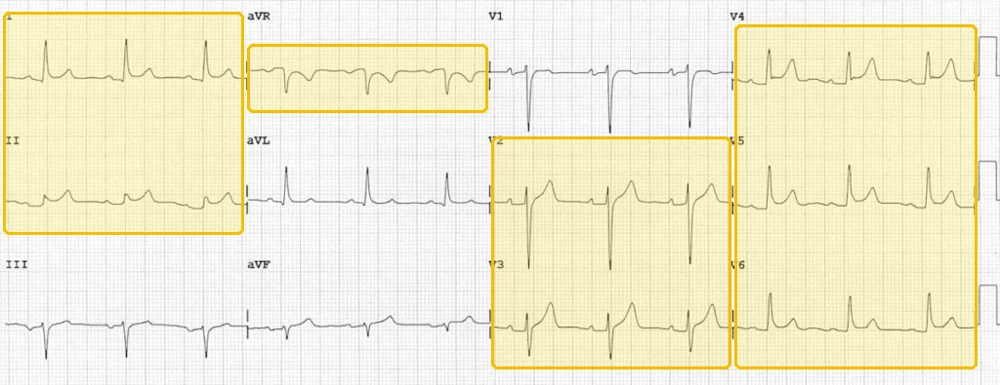 | |||||||
| Hypertrophic cardiomyopathyTop 5 non-emergent · #5Leading cause of sudden death in preadolescent and adolescent children, in 1 of every 500 people; over 80% of those deaths are ventricular fibrillation, linked to extreme exertion — the murmur not to miss on a sports physical.Clinical Medicine Lecture 28 Cardiomyopathy (Carter) · slides 58–79, 82 · Clinical Medicine Lecture 23 Valvular slides 17, 54 · Physical Diagnosis 2 Cardiovascular slides 60–62, 66, 70 and the special maneuvers handout | “I blacked out in the middle of basketball practice — no warning.” Or: “I get short of breath and my chest hurts when I push hard, and I go lightheaded when I stand until I lie down. My brother has a thick heart muscle.” | Blood pressure and heart rate usually normal. Pulsus bisferiens (a double systolic peak); a forceful, sustained apical impulse, perhaps displaced laterally; an S4. A harsh crescendo-decrescendo midsystolic murmur at the left sternal border, third to fourth intercostal space, radiating down the sternal border but not to the carotids; often a holosystolic mitral regurgitation murmur at the apex radiating to the axilla. | Valsalva (supine, bear down or push against your hand on the mid-abdomen) and standing quickly from a squat → the murmur gets LOUDER. Squatting from standing, passive leg raise or sustained handgrip → SOFTER. Listen over the carotids to confirm it does not radiate there; palpate the carotid for the bisferiens upstroke and the apex for a sustained impulse. |
| Rules it INEchocardiogram (test of choice) → unexplained left ventricular wall thickness of 1.5 centimeters or more, asymmetric septal hypertrophy, a small cavity, and systolic anterior motion of the mitral valve in the obstructive form. Electrocardiogram → left ventricular hypertrophy, prominent Q waves in the inferior and lateral leads, left axis deviation. Cardiac magnetic resonance imaging if the echocardiogram is questionable; 24 to 48 hours of ambulatory electrocardiogram to gauge arrhythmia and sudden-death risk.Rules the differentials OUTNormal wall thickness on echocardiography excludes it, and hypertrophy explained by hypertension or aortic valve disease is secondary, not hypertrophic cardiomyopathy. A narrowed, calcified aortic valve confirms aortic stenosis; thickened, redundant mitral leaflets (over 5 millimeters) confirm prolapse; a structurally normal heart makes the murmur innocent. | Cardiology referral. Outflow obstruction: a beta blocker (metoprolol) first, or verapamil or diltiazem. Avoid nitrates and positive inotropes (digoxin, epinephrine, norepinephrine); diuretics only with caution. Sudden-death prevention: an implantable cardioverter-defibrillator, with amiodarone or disopyramide (the slide credits amiodarone; guidelines credit only the defibrillator). Refractory obstruction: surgical myectomy or alcohol septal ablation.URGENT — cardiology and echocardiogram within days, with no competitive sport or strenuous exertion until cleared; a repeat faint, chest pain or racing heartbeat goes to the emergency department. | Until the cardiologist clears you, no competitive sports or hard exercise — mild to moderate, noncompetitive activity only. Stay well hydrated and avoid excess alcohol. It is usually inherited, so your parents, brothers, sisters and children should be checked. Call 911 for fainting, chest pain or a racing heartbeat. |
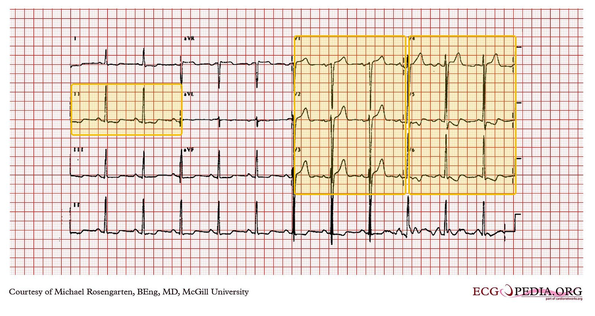 | |||||||
These do not wait for a clinic appointment. If the station gives you one of these, the answer to “what is your plan” begins with where the patient goes now, not with which test you would order.
| Condition | How the patient describes it the words they actually use |
What you see, feel and hear inspection, palpation, auscultation, the vitals clue |
Physical exams to rule it in or out the maneuvers, not the findings |
Top 3 differentials and what separates each one |
Tests — and what a positive looks like | Treatment & referral | Patient education |
|---|---|---|---|---|---|---|---|
| Acute coronary syndromeTop 5 emergent · #1Lethal: plaque rupture with thrombus. Sudden cardiac death, mostly ventricular fibrillation, is the first sign of coronary disease in over 20%; cardiogenic shock, myocardial rupture and arrhythmias follow — “time is muscle”.Clinical Medicine Lecture 24 Coronary Artery Disease · slides 11, 20, 28–32, 45–53, 63, 65–68, 71–74, 78, 81–85, supplement slide 72a · Clinical Medicine Lecture 27 Arterial Occlusive and Aneurysm slides 114–117 · Clinical Medicine Lecture 31 Pericardial Disease slides 13, 17, 19 · Physical Diagnosis 2 Cardiovascular slides 5, 42, 59 | “A crushing pressure in the middle of my chest came on while I was sitting watching television. It goes into my jaw and down my left arm, I’m sweating and sick to my stomach, and it won’t go away.” A woman over 65 or a diabetic may say only “I’m short of breath and exhausted” (silent ischemia). | General survey: distress, diaphoresis, pallor, a clenched fist over the sternum (Levine sign). Vitals: tachycardia, or bradycardia and heart block with a right coronary artery infarct (it supplies the atrioventricular node); hypotension = cardiogenic shock. The heart may sound normal; listen for an S4, an S3 with basal crackles (failure), and a new apical holosystolic murmur (papillary muscle rupture). | Say the electrocardiogram within 10 minutes comes before a full examination. Blood pressure in both arms and radial against femoral pulses (dissection). Jugular venous pressure at 30–45 degrees and lung bases: hypotension with a raised jugular venous pressure and clear lungs in an inferior infarct suggests right ventricular infarct. Sit the patient forward for a friction rub; press the chest wall; check the calves. |
| Rules it INElectrocardiogram within 10 minutes → ST elevation over 1 mm in two or more consecutive leads = ST-elevation myocardial infarction: reperfuse without waiting for troponin, which rises later; the lecturer corrected the slide that says markers must be present. ST depression over 1 mm and/or T-wave inversion in two or more consecutive leads = non-ST-elevation syndrome. Troponin I, repeated → ELEVATED (over 0.04 ng/mL; high-sensitivity over 12 ng/L in women, 20 ng/L in men) = non-ST-elevation myocardial infarction; NORMAL = unstable angina.Rules the differentials OUTNormal electrocardiogram with normal serial troponins → infarction excluded (one draw means two); go on to stress testing. Computed tomography of the chest → an intimal tear with a false lumen = dissection (the electrocardiogram may be normal). ST elevation in every territory with PR depression and reciprocal change in aVR → pericarditis. D-dimer, then computed tomography pulmonary angiography → a filling defect = pulmonary embolism. | Call 911. Chewable aspirin now; oxygen only if saturation is under 91%; nitroglycerin, but never in a right ventricular infarct or after a phosphodiesterase inhibitor; beta blocker if no bradycardia; clopidogrel, ticagrelor or prasugrel plus heparin. ST elevation: catheterization team, door-to-balloon under 90 minutes, or thrombolytics (tenecteplase) within 30 minutes of arrival if intervention is 2 or more hours away. Non-ST elevation: stabilize, then catheterization, early if the Thrombolysis in Myocardial Infarction score is 3 or more. Discharge on a high-intensity statin and aspirin.EMERGENT — call 911; emergency department now (electrocardiogram within 10 minutes, door-to-balloon under 90 minutes). | Chest pain like this again, or pain not better 5 minutes after one nitroglycerin: call 911 and do not drive yourself. Take the aspirin and the second antiplatelet every day — stopping them early after a stent can suddenly close it. Statin and beta blocker daily; quit smoking, low-salt low-fat diet, exercise as tolerated; follow-up at 3, 6 and 12 months. No erectile dysfunction drugs (phosphodiesterase inhibitors) if you may need nitroglycerin. |
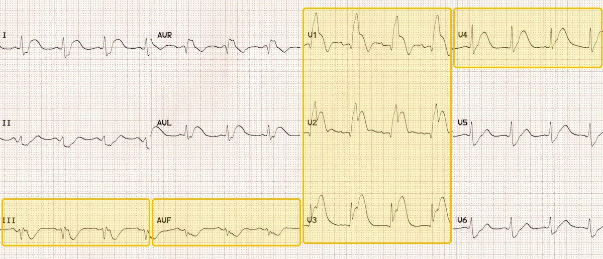 | |||||||
| Aortic dissectionTop 5 emergent · #2Acute untreated dissection carries a high mortality: the tear propagates, and pulse deficits, a new neurologic deficit and acute aortic regurgitation follow.Clinical Medicine Lecture 27 Arterial Occlusive Disease and Aneurysms (Carter) · slides 114–118 · Clinical Medicine Lecture 20 Hypertension (Jaquith) slides 5, 29, 42, 69 · Clinical Medicine Lecture 24 Coronary Artery Disease slides 28, 31, 86 · Clinical Medicine Lecture 23 Valvular slide 28 · Clinical Medicine Lecture 31 Pericardial slides 13, 17, 22 · Physical Diagnosis 2 Cardiovascular slide 59 | “It hit me all at once — a tearing, ripping pain in my chest that went straight through to my back, between my shoulder blades.” Sometimes: “…and then I passed out.” | Vitals: hypertension in most (or hypotension) and unequal arm pressures. Pulse deficits; a new high-pitched, blowing diastolic murmur of aortic regurgitation at the third left intercostal space; a new neurologic deficit; a patient in severe distress. Normal pulses do not exclude it. | Blood pressure in BOTH arms, and compare. Palpate radial, femoral and pedal pulses on both sides for a deficit. Sit the patient forward, breath held after full expiration, and listen at the left sternal border for the aortic regurgitation murmur. A quick focused neurologic check — none of which may delay imaging. |
| Rules it INComputed tomography angiography of the chest and abdomen → an intimal tear with a false lumen, and its extent. Transesophageal echocardiography → the same tear and false lumen, plus aortic regurgitation. Magnetic resonance imaging is good but slow. Chest radiograph → possibly a widened mediastinum.Rules the differentials OUTOnly a negative cross-sectional scan excludes it: a normal chest radiograph, normal pulses or a normal electrocardiogram do not. ST elevation in two or more leads with a rising troponin favors acute coronary syndrome; widespread concave ST elevation with a rub favors pericarditis; a clot on computed tomography pulmonary angiography means embolism. | Intravenous access, continuous monitoring and pain control. Lower the systolic pressure to 100 to 120 millimeters of mercury with an intravenous beta blocker (esmolol) or vasodilator (nitroprusside) — the slide lists them as alternatives; guidelines give the beta blocker first. Dissection is excluded from the gradual hypertensive-emergency targets. Emergency cardiothoracic and vascular surgery: grafting and replacing the diseased aorta.EMERGENT — emergency department now; call 911 for immediate computed tomography angiography and cardiothoracic surgery. | In plain words: the wall of the main artery leaving the heart has torn, and it needs emergency treatment and probably surgery. Afterwards, take the blood pressure medicine every day and keep the pressure controlled for life. Call 911 for any new tearing chest or back pain, fainting, or weakness on one side. |
| Cardiac tamponadeTop 5 emergent · #3Fluid under pressure compresses the heart until it cannot fill; an acute effusion does it with under 200 mL. The short-term outcome is often good with prompt recognition and treatment.Clinical Medicine Lecture 31 Pericardial Disease (Reynolds) · slides 53–60, 63, 65, 67–71 · Physical Diagnosis 2 Cardiovascular slides 20, 28 | “I can’t catch my breath and I feel like I’m going to pass out; my chest feels heavy.” Often after recent pericarditis, cancer, a heart procedure or chest trauma. | Beck triad: hypotension, distended jugular veins, muffled heart sounds. Pulsus paradoxus — systolic pressure falls more than 10 mmHg on inspiration. Tachycardia and tachypnea on the vitals form (sinus tachycardia signals serious compromise); the apical impulse is faint and the lungs are usually clear. | Measure pulsus paradoxus with a manual cuff: deflate slowly, note the pressure where Korotkoff sounds appear only in expiration, then where they are heard throughout breathing; a gap over 10 mmHg is positive. Jugular venous pressure at 30–45 degrees. Palpate for the apical impulse and auscultate for distant heart sounds. |
| Rules it INA clinical diagnosis, confirmed by the response to drainage. Echocardiogram → effusion with right ventricular diastolic collapse, the heart swinging in fluid. Electrocardiogram → low-voltage QRS, tachycardia, electrical alternans. Chest radiograph → a globular, water-bottle heart with clear lung fields.Rules the differentials OUTNo effusion on echocardiogram excludes it and turns you to the differentials: electrocardiogram and troponin for right ventricular infarction, computed tomography pulmonary angiogram for embolism, computed tomography angiogram of the chest for dissection. | Expedient pericardiocentesis is definitive; intravenous fluids raise preload to hold off right ventricular collapse until then; no diuretics. Traumatic hemorrhagic tamponade → emergent surgery. Send the fluid (cell count, Gram stain, cultures, acid-fast stain, cytology); recurrent or loculated effusions get a pericardial window or pericardiectomy; treat the cause.EMERGENT — suspected in the office: call 911; emergency department now for pericardiocentesis | Explain that fluid around the heart is squeezing it and must be drained today. After drainage: follow-up with the specialty that matches the cause, and repeat echocardiograms for a large effusion; returning breathlessness, lightheadedness or fainting means 911. In a malignant effusion, offer a palliative care conversation. |
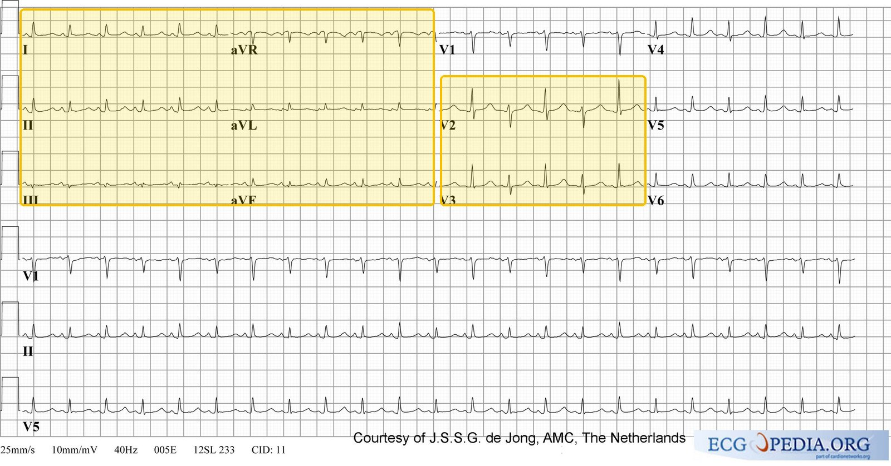 | |||||||
| Ventricular tachycardiaTop 5 emergent · #4Sustained ventricular tachycardia can collapse the circulation in under 30 seconds, and pulseless ventricular tachycardia is one of the four arrest rhythms of sudden cardiac death; polymorphic is never truly stable.Clinical Medicine Lecture 30 Arrhythmias II: Blocks and Ventriculars (Elwaya) · slides 37–47 · Clinical Medicine Lecture 29 slides 23, 26, 33, 35, 52 · Physical Diagnosis 2 Cardiovascular slides 6, 9, 97 | “All of a sudden my heart started pounding really fast and I felt like I was going to pass out. My chest feels tight.” Often someone with a past heart attack, heart failure or cardiomyopathy. | A regular tachycardia of 100 to 250 on the vitals form. Instability is any one of chest pain, altered mental status, shortness of breath or hypotension; a lost pulse is cardiac arrest. Atrioventricular dissociation gives irregular cannon a waves in the neck and an S1 that varies in loudness. | Check for a pulse first (carotid, one side at a time), then blood pressure and mental status — stability decides the treatment. Inspect the jugular veins for cannon a waves; listen for an S3 and crackles. Do not delay for a full examination: monitor, intravenous access, oxygen and a 12-lead electrocardiogram come first. |
| Rules it IN12-lead electrocardiogram or monitor → regular, 100 to 250, wide QRS (over 0.12 seconds), no PR interval: three or more consecutive premature ventricular contractions, sustained if 30 seconds or more or if it collapses the patient sooner. One QRS shape is monomorphic; changing shapes are polymorphic. Potassium, magnesium, calcium and troponin look for the trigger.Rules the differentials OUTA narrow QRS means supraventricular tachycardia; an irregular wide rhythm near 300 means pre-excited atrial fibrillation; twisting complexes on a long QT mean torsades. Until proven otherwise, a regular wide-complex tachycardia is ventricular. | No pulse → defibrillation and cardiopulmonary resuscitation. Unstable with a pulse → synchronized cardioversion. Stable sustained monomorphic → intravenous lidocaine, amiodarone or procainamide (no procainamide with a long QT or heart failure); polymorphic → defibrillate, then urgent coronary angiography; torsades → intravenous magnesium. Once stable, most need an implantable cardioverter-defibrillator; symptomatic non-sustained runs start a beta blocker (metoprolol, carvedilol).EMERGENT — sustained or symptomatic: call 911 from the office; emergency department now, on a monitor with defibrillator pads on (only brief, asymptomatic non-sustained runs go to outpatient cardiology) | Call 911 for fainting, chest pain or a racing heartbeat that will not stop. After an implanted defibrillator fires, call the cardiologist; call 911 if it fires repeatedly or you feel unwell. Take the medicines exactly as prescribed and ask before any new drug that can prolong the QT. Family members should learn cardiopulmonary resuscitation. |
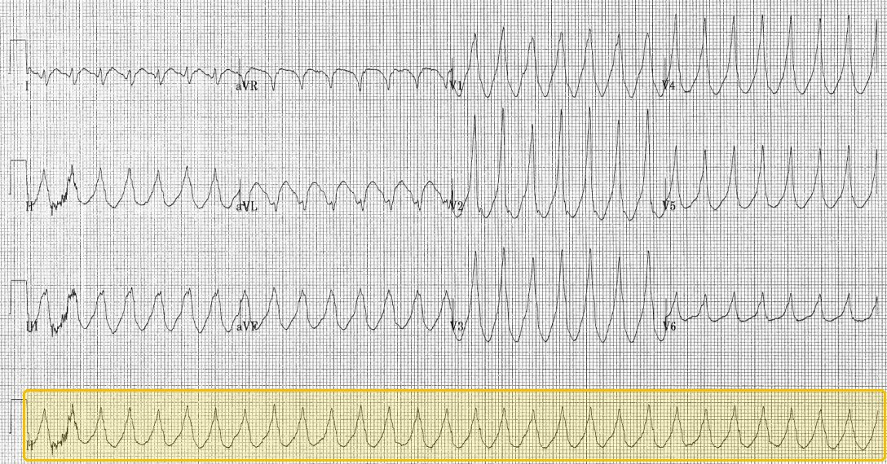 | |||||||
| Hypertensive emergencyTop 5 emergent · #5Lethal through acute organ injury — encephalopathy, pulmonary edema, acute kidney injury, aortic dissection, acute coronary syndrome — and lowering the pressure too fast itself causes stroke, myocardial injury or renal failure.Clinical Medicine Lecture 20 Hypertension (Jaquith) · slides 5, 20, 27, 29, 37, 39, 40, 42, 44, 49, 59, 69, 75, 76 · Clinical Medicine Lecture 27 Arterial Occlusive Disease and Aneurysm (Carter) · slides 116, 118 · Physical Diagnosis 2 Cardiovascular slides 40, 77, 86, 102 | “I have a sudden, pounding headache and my vision is blurry — my home machine read 230 over 130.” Or: “I can’t breathe lying down, and I ran out of my pressure pills last week.” | Vitals form: severe elevation, often above 180 systolic and/or 120 diastolic — but the organ injury, not the number, defines it, and lower values with injury qualify. Look for confusion or a focal deficit, optic disc edema on fundoscopy, hypoxemia with diffuse bilateral crackles (pulmonary edema), and a pulse deficit, unequal arm pressures or a new aortic regurgitation murmur (dissection). | Repeat the pressure in both arms and palpate radial, femoral and distal pulses for a deficit or delay. Fundoscopy for disc edema and a focused neurologic examination (mental status, speech, strength, visual fields). Auscultate the lung bases for crackles and the heart for an S3, and for an early diastolic aortic regurgitation murmur with the patient sitting, leaning forward, breath held after exhalation. |
| Rules it INOrgan injury, not the number, makes the diagnosis — do not wait for repeat visits. Electrocardiogram and troponin → ischemia or myocardial injury; B-type natriuretic peptide → heart failure. Creatinine and urinalysis → acute kidney injury (rising creatinine, casts, hematuria). Chest radiograph → pulmonary edema or a widened mediastinum; head computed tomography or magnetic resonance imaging → encephalopathy, stroke or hemorrhage.Rules the differentials OUTNo acute organ injury on history, examination and tests means severe hypertension, not an emergency — so no rapid intravenous lowering. A normal chest radiograph and normal pulses do NOT exclude dissection; computed tomography angiography does. A focal deficit with an infarct or bleed on imaging is a stroke and follows its own protocol. | Airway, breathing, circulation; intravenous access, continuous cardiac monitoring, an arterial line, and a titratable intravenous drug matched to the organ syndrome. Lower mean arterial pressure no more than 20–25% in the first hour, toward about 160/100–110 over 2–6 hours, then normal over 24–48 hours (dissection and some strokes excepted). Pulmonary edema: intravenous nitroglycerin or nitroprusside, oxygen, continuous or bilevel positive airway pressure, and a loop diuretic if overloaded.EMERGENT — emergency department now; call 911; continuous monitoring with titratable intravenous therapy. | Once stable: take the pressure pills every day and never stop them suddenly — clonidine in particular rebounds. Avoid cocaine, stimulants, decongestants, heavy drinking and sudden alcohol withdrawal. Keep a home log and come to every follow-up. Call 911 for a sudden severe headache, confusion, vision change, weakness, chest or back pain, or breathlessness. |